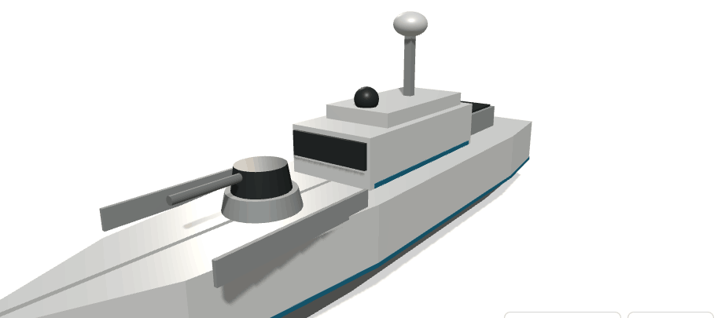
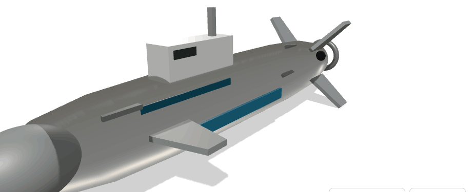
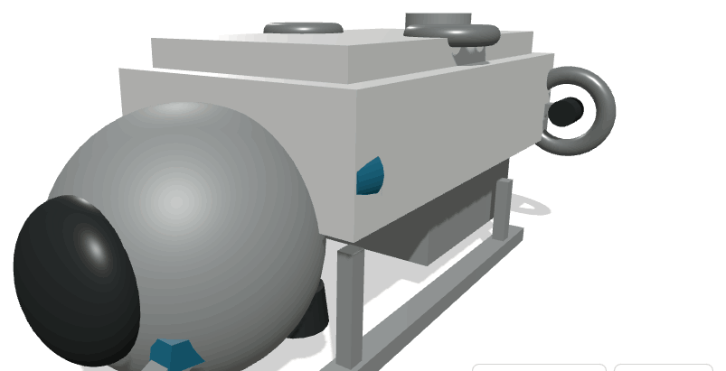

Estratégia Nacional
de Drones
Sete plataformas não tripuladas, um hub industrial nacional e um fundo soberano para as financiar.
Portugal já gasta mais de seis mil milhões de euros por ano em defesa. A decisão que falta não é quanto gastar — é onde esse dinheiro é produzido.
O mesmo vale para o combate a incêndios, para a vigilância do mar e para o enterramento da rede eléctrica. São quatro problemas nacionais com a mesma resposta industrial.
Percurso
Contexto
O que mudou no mercado, o que Portugal passou a gastar e onde esse dinheiro pára.
O mercado de plataformas não tripuladas triplica na próxima década
O crescimento é atribuído à despesa de defesa, aos sistemas autónomos e à procura de vigilância persistente. A fatia europeia mais do que duplica no mesmo período, para 10,1 mil milhões.
A despesa quase duplicou em dois anos — e vai duplicar outra vez
Em 2025 Portugal atingiu 2,1% do PIB, cumprindo a meta da NATO pela primeira vez. A meta acordada de 5% até 2035 implica mais do dobro da despesa actual.
Relatório NATO · ECO (2026)
A prioridade já está escrita. A capacidade de a executar não existe.
O Ministério da Defesa aponta a ciberdefesa, os drones, a inteligência artificial, os sensores e os sistemas autónomos como sectores tecnológicos a priorizar, para posicionar Portugal nas cadeias europeias de valor.
O IISS aponta a lenta reforma das aquisições e a capacidade industrial limitada como travões à Europa no aumento de produção — em particular na defesa aérea.
Quatro frentes nacionais, uma resposta
Meios de reconhecimento e guerra electrónica próprios, sem exposição de tripulação.
Fiscalização de superfície, vigilância submarina e cartografia do fundo.
Vigilância térmica permanente e largada autónoma de noite e no fumo.
Abertura de vala, assentamento de cabo e cadastro digital automático.
As quatro frentes partilham sensores, software de autonomia, propulsão eléctrica e materiais compostos. É essa partilha que torna um programa único mais barato do que quatro programas separados.
Sete plataformas
Quatro militares, três civis. Dois no ar, três na água, uma no fundo do mar, uma em terra.
A família OpenDrone
OpenDrone_AM
Reconhecimento persistente e ataque de precisão sobre território nacional e área de interesse atlântica. Plataforma de referência do programa.


OpenDrone_AM_S
Ala voadora de baixa observabilidade para vigilância e guerra electrónica em espaço aéreo negado.
OpenDrone_AC_B
Contenção de ignições nos primeiros minutos, incluindo de noite e em fumo denso, quando os meios tripulados estão limitados.


OpenDrone_AQM
Embarcação de intercepção rápida para a zona económica exclusiva, a orla costeira e as vias fluviais.
OpenDrone_AQM_S
Patrulha submarina silenciosa e protecção da infra-estrutura no fundo do mar — cabos de dados e condutas de energia.


OpenDrone_AQM_I
Cartografia, monitorização e intervenção até 4 000 metros — o mar português e os cabos que o atravessam.
OpenDrone_T
Abertura de vala, assentamento de cabo e cadastro digital do traçado — para enterrar a rede eléctrica e levar fibra ao interior.

O hub industrial
Uma fábrica, um campo de ensaio e uma academia no mesmo perímetro.
Três funções, um perímetro
Compósitos, integração de sensores, bancada de propulsão e linha de montagem comum às sete plataformas.
Pista própria, tanque de pressão, acesso a mar aberto e espaço aéreo segregado para ensaio de autonomia.
Mestrados e cursos profissionais com universidades e politécnicos, com os alunos a trabalhar nos programas reais.
A razão de estarem juntos é o ciclo de iteração: um problema detectado no ensaio de manhã é corrigido na linha à tarde. É essa velocidade, e não o custo de mão de obra, que decide programas de sistemas autónomos.
Cadeia de fornecimento
Meta declarada: 60% de valor nacional na plataforma aérea de referência ao fim de cinco anos, medido em valor de compra e não em peso.
A restrição não é capital. É gente formada.
Os alunos trabalham em componentes que entram em plataformas certificadas. A propriedade intelectual gerada com dinheiro do fundo fica no fundo.
Onde fica o hub: critérios antes de nomes
Pista com mais de 1 800 m e possibilidade de espaço aéreo segregado permanente para ensaio.
Cais próprio ou acordo portuário a menos de 60 km, com profundidade para ensaio submarino.
Universidade com engenharia aeroespacial, mecânica ou electrotécnica a menos de uma hora.
Moldes, compósitos, metalomecânica e electrónica num raio de 100 km.
A localização é decidida por concurso entre candidaturas municipais e regionais avaliadas nestes quatro critérios, com decisão na fase preparatória.
Efeito económico ao fim de dez anos
Valores de referência do programa. A validar em estudo de impacto independente antes da decisão de investimento.
Parcerias
institucionais
Quem define requisitos, quem compra e quem opera.
O cliente lançador define o requisito e compra a série
Requisito operacional das duas plataformas aéreas militares, certificação e formação de operadores.
Requisito de superfície e submarino, integração no dispositivo naval e ensaio em mar aberto.
Vigilância terrestre, fronteira e apoio a operações de fiscalização.
≈ 2% da despesa de defesa
Os clientes civis dão volume à linha de produção
Define o requisito de ataque à ignição e opera a frota de combate a incêndios em articulação com os meios tripulados.
Vigilância térmica permanente das áreas de risco e verificação de faixas de gestão de combustível.
Concessionárias contratam vala, cabo e cadastro à hora de máquina, sem investir em frota própria.
Estes contratos são receita comercial, não despesa pública de defesa: pagam-se por comparação directa com o custo actual de máquina tripulada e de meio aéreo alugado.
O mar é o argumento internacional do programa
Institutos e universidades usam o submersível civil como infra-estrutura partilhada, com tempo de missão atribuído por concurso científico.
Inspecção e vigilância de cabos de dados e condutas de energia — serviço vendável a operadores internacionais a partir de Portugal.
Candidatura das componentes civis a financiamento europeu de investigação e de vigilância marítima.

Financiamento
Uma contribuição sectorial única converte-se num fundo permanente.
Quanto custa, em dez anos
A produção em série não está aqui: é paga pela encomenda pública e pela exportação, ao preço unitário indicado em cada memorando.
Contribuição sectorial extraordinária, uma só vez
Taxas diferenciadas pela margem de cada sector: a banca declarou 6,32 mil milhões de lucro em 2025, o retalho opera com margem fina. A contribuição é única e não recorrente — o que se cria é o fundo, não o imposto.
Contrapartida oferecida aos contribuintes: acesso preferencial a serviços do hub e representação sem voto no conselho consultivo do fundo.
Dotação inicial de 1 400 milhões
O fundo não distribui subsídios. Financia desenvolvimento contra marcos técnicos verificados, detém a propriedade intelectual gerada e recebe royalties sobre cada unidade vendida.
Regras que protegem o fundo de si mesmo
Cada tranche depende de um marco técnico verificado por entidade independente. Marco falhado suspende o desembolso.
Tudo o que é desenvolvido com dinheiro do fundo pertence ao fundo, com licença de uso aos parceiros industriais.
Royalty de 5% sobre cada unidade vendida, nacional ou exportada, entra no fundo e financia a geração seguinte.
Conselho de administração com mandatos de seis anos desfasados do ciclo eleitoral, escrutinado pelo parlamento.
Máximo de 5% da dotação anual em estrutura própria. O resto vai para desenvolvimento, ensaio e formação.
Contas, marcos cumpridos e falhados publicados em dados abertos, com auditoria externa.
Projecção do fundo a dez anos
rendimento aplicado de 4% ao ano
O ponto baixo é o ano 5, com 587 milhões em caixa. A partir do ano 6 o retorno da produção e da exportação supera a despesa de desenvolvimento e o fundo termina a década acima da dotação inicial — sem nova contribuição.
De onde vem o retorno
Defesa, protecção civil e autoridade marítima, em dez anos. Royalty de 5% para o fundo.
40% da produção, sobretudo plataformas civis e de vigilância marítima, para mercados europeu e lusófono.
Hora de máquina em vala e cabo, inspecção de cabos submarinos, tempo de missão científico e formação.
retorno acumulado
Riscos e mitigação
Execução
Dez anos, quatro fases, métricas públicas.
Cronograma
- Lei do fundo e contribuição
- Concurso de localização
- Academia abre
- Início do AC_B e do T
- Voo do AC_B
- T em obra real
- Início do AM e do AQM
- Linha de montagem operacional
- Entrega do AM à Força Aérea
- AQM em patrulha
- Início do AM_S e do AQM_S
- Primeira exportação
- Sete plataformas em produção
- AQM_I em campanha científica
- Fundo acima da dotação inicial
- Segunda geração em desenho
A ordem é deliberada: as plataformas civis vêm primeiro porque certificam mais depressa, dão resultado público visível e treinam a linha de produção antes de entrar o programa militar.
Como se mede o sucesso
Publicadas em dados abertos no relatório anual do fundo, com auditoria externa. Duas metas falhadas consecutivas obrigam a revisão do programa em sede parlamentar.
Três decisões para arrancar
Com a contribuição sectorial única, a dotação pública e as regras de governação deste documento.
Inscrever 1 250 M€ de encomenda plurianual na Lei de Programação Militar e nos planos de protecção civil.
Quatro critérios objectivos, candidaturas municipais e regionais, decisão em doze meses.
As três decisões custam, no primeiro ano, 150 milhões de euros — 2,5% da despesa nacional em defesa de 2025.
Fontes e notas
Todos os valores de plataforma — dimensões, desempenho, custo unitário e custo de desenvolvimento — são estimativas de conceito. Servem para dimensionar o programa e comparar alternativas, não para especificar uma aquisição.
As bases de incidência do retalho alimentar e da energia são estimativas próprias a partir de agregados do INE e de relatórios sectoriais, e devem ser substituídas por dados fiscais na versão legislativa.
Os modelos tridimensionais que acompanham este documento são maquetas de proporção, não desenhos de engenharia.
Sete memorandos de plataforma e sete modelos 3D em anexo